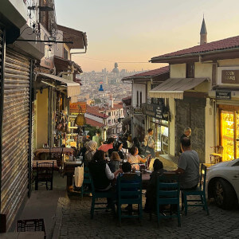
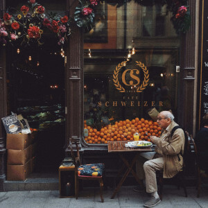
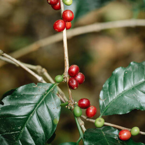
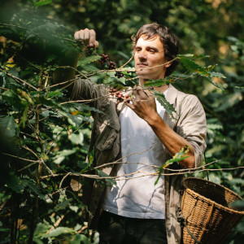
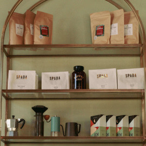

Cultura do café
Do terroir ao ritual da xícara
Nascer do sol em Minas, cheiros da Colômbia e toques cítricos da Etiópia. Cada grão carrega o clima, o solo e a história de sua comunidade. Na Casa Café celebramos esses rituais, conectando produtores a apreciadores com respeito, transparência e técnicas precisas de torra.
Nossa jornada
Um espaço para inspirar encontros
Planejamos a Casa Café como um refúgio urbano: menu sazonal, biblioteca compartilhada e experiências sensoriais que aproximam pessoas. Da curadoria de grãos ao treinamento de baristas, buscamos excelência sustentável e parcerias de longo prazo.
-
Demanda consciente
Produção alinhada com a colheita e com a transparência em toda cadeia.
-
Estoque vivo
Torramos semanalmente para preservar notas aromáticas e frescor.
-
Qualidade sensorial
Metodologias SCA e degustações guiadas para cada novo lote.


Diário da Casa
Histórias frescas para o seu próximo gole
Conteúdos quinzenais com bastidores da torrefação, viagens às fazendas parceiras e dicas para elevar sua experiência em casa.

Colheita regenerativa
Como nossos parceiros cuidam do solo e preservam biodiversidade a cada safra.

Do grão ao perfil
Processos de torra que realçam notas florais, caramelizadas ou frutadas.

Design para cafés
Como criamos ambientes que acolhem e estimulam conexões significativas.
Leituras para acompanhar
Sugestões de livros e trilhas sonoras para um ritual de café inspirado.